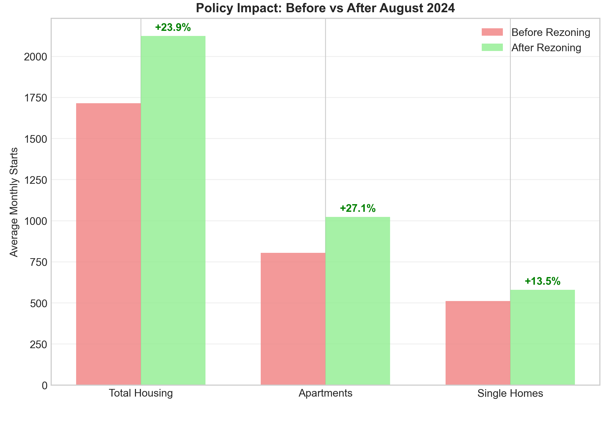
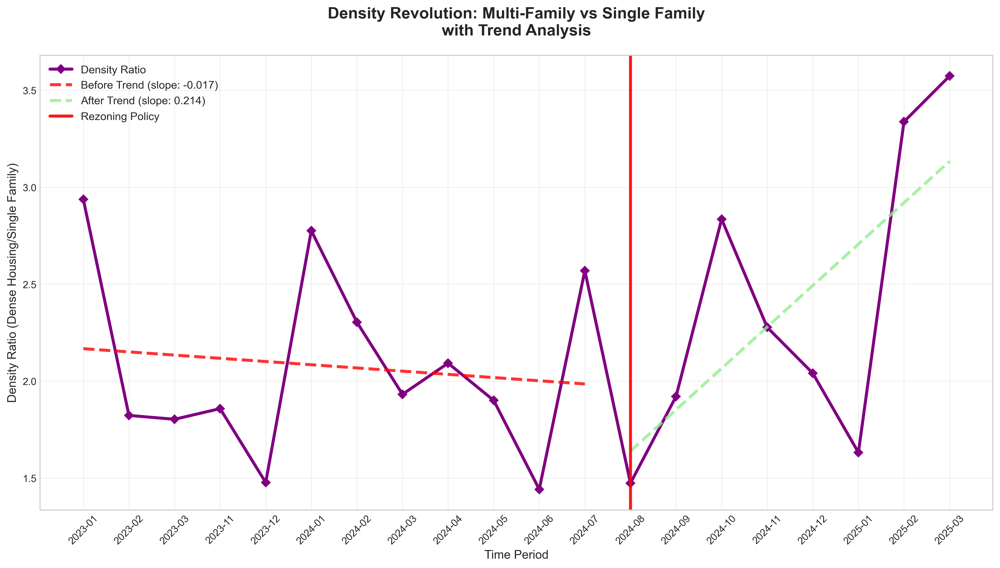
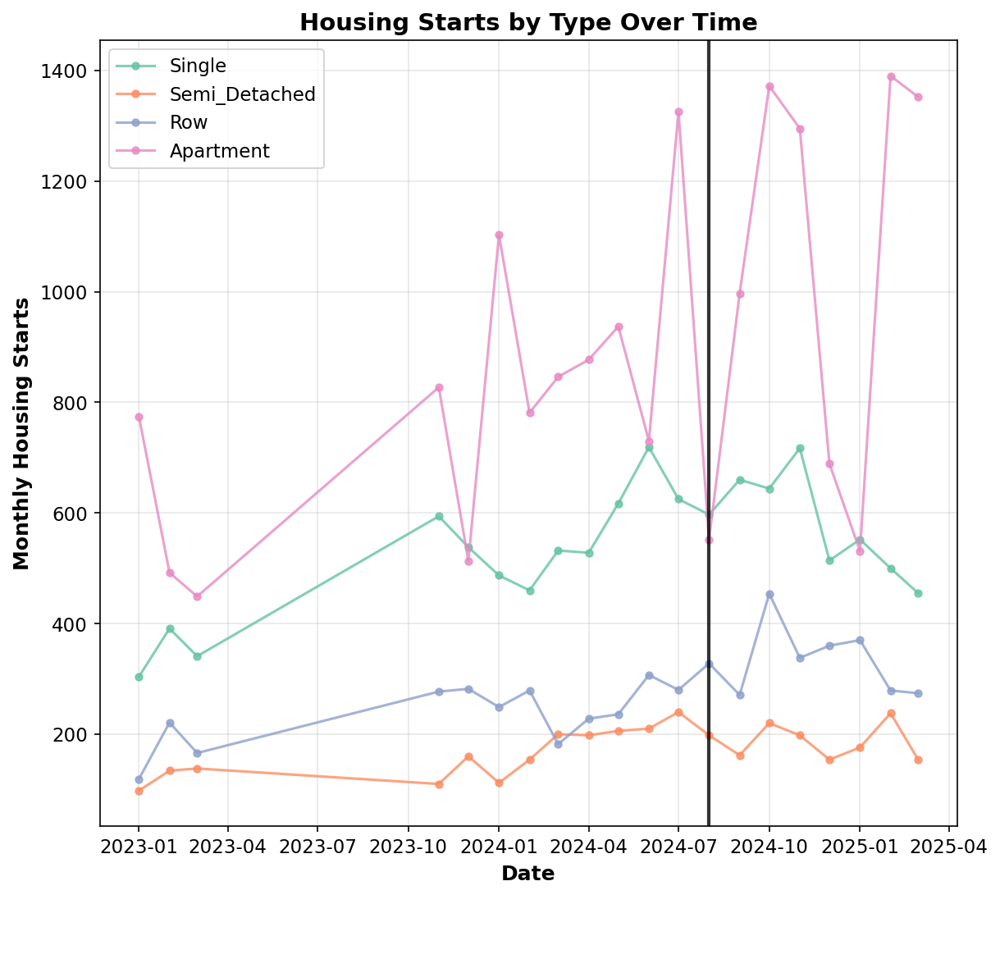
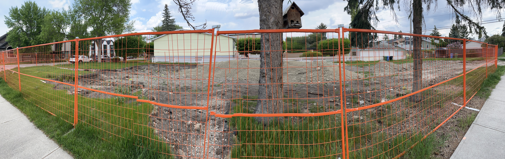
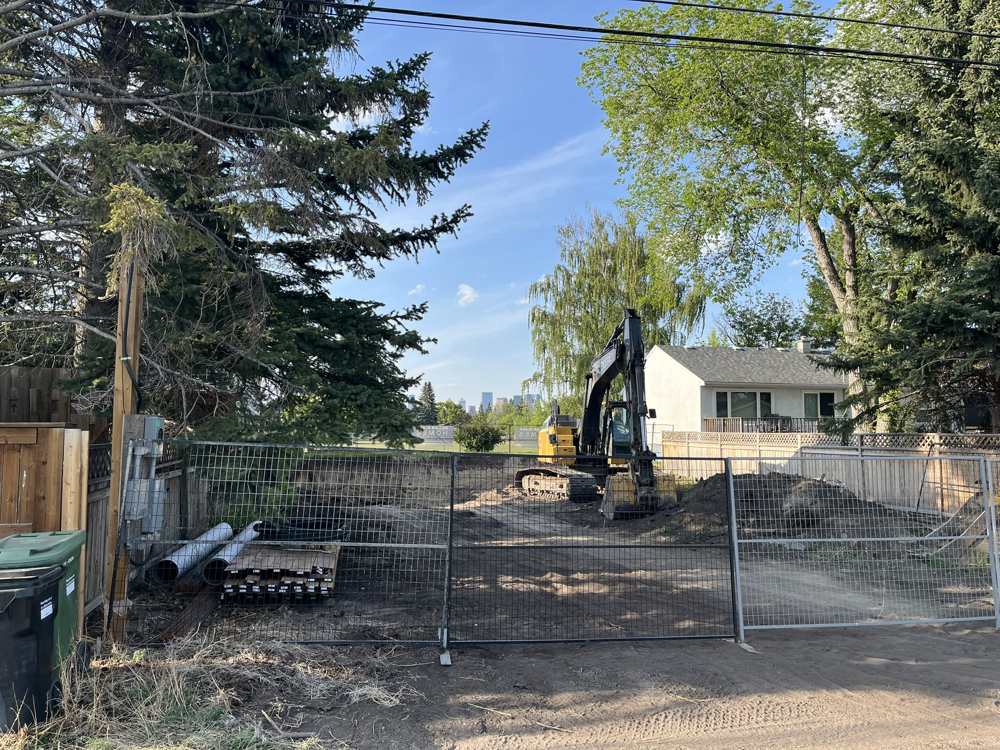

The Rezoning Paradox
Why does every single person around me say housing sucks?

A finished housing development project across the street from a stripped down single family home about to be torn down and developed. This area (5 minutes from my house) was rezoned a year ago, allowing duplexes and townhouses to be built in place of single family homes.
The first question on the mind of almost all people I know under 40 who aren't living with their parents is: What's going on with housing? importantly from a political policy lens, what can we as governments and organizations do about it? And I think the answer many city councils, individuals and pollitically minded urban designers is the YIMBY theory. Remove restrictions, remove density limits, let the free market build. The theory itself is genuinely sound and has worked in many places.
This analysis came about as a disconnection of lived experience, and policy promises. When Calgary implemented a citywide blanket rezoning in August 2024, housing construction starts growth didn't increase, in fact despite raw growth, the trend fell 21% when compared to the pre-policy trend. This doesn't mean the YIMBY theory is entirely incorrect, but it's evidence that markets are much more complex than we as policy designers assume. Downtown Construction showcasing the different levels of urban construction, workers, unions, machinery, capital all need to connect and allign in order for a project to succeed.
Downtown Construction showcasing the different levels of urban construction, workers, unions, machinery, capital all need to connect and allign in order for a project to succeed.
The specific rezoning paradox showcases a trend wherein a temporary but significant disruption happens when a traditional heirarhichal decision making center makes a wholesale decision on a rhizomatic market network. Imagine growing a garden already in bloom, or building a road with current traffic, eventually you will increase capacity, but you're going to disrupt the delicate bonds that govern that network and cause a traffic jam.
In no way does this analysis imply that rezoning isn't a way to increase housing supply while having a downstreatm effect on affordability. Rather, to create and deploy a genuinely successfull housing policy means understanding the inherent logic differences between heirarchichal and rhizomatic structures, and understanding that rule changes cannot alone deliver the results that we want. Change requires supporting, rather than trying to dictate to, the delicate mycelium like structures of contractors, financiers, developers and buyers. Still, in 10 years i'd bet Calgary homes will more afforadable than not due to this policy, but transitional support is an important topic for cities who are yet to enact rezoning reforms.
Introduction
The problem describing the vast majority of housing situations in the North American real estate market is the increasing lack of starter homes and affordable rent in high-employment areas, which gates starting earners out of geographical economic opportunity zones, as well as increasing pressures with an increasing population and plateaued supply construction.
It would be a tall order to model the entire North American real estate market, but since this is not a unique problem to Calgary, I can use a recent set of decisions made by the City Council of Calgary, responsible for zoning decisions for 1.4 million people. They have attempted to solve the lack of affordable housing by rezoning large swaths of single-family homes into duplexes, townhouses, and multi-family rental properties.
Calgary has seen a relatively high increase in population, stretching its infrastructure on multiple levels. Thus, city planners have had to make relatively radical decisions—radical according to typical North American car-based, single-family home city planning history spanning the last five decades. I have a paper about thisSee A Manufactured Crisis of Housing Affordability: A Community-Based Research Report of Affordable Housing in Calgary on why moving away from car-based infrastructure is so difficult.
The City of Calgary Blanket Rezoning Map of Calgary's NorthwestThe YIMBY theory suggests that increasing housing supply through rezoning, allowing development, and funding new construction, rather than controlling current housing, can alleviate concerns about housing. I want to investigate several things as a result of these decisions.
Research Questions
What changes were made, with what rationale, and what was the expected outcome?
Did anything change beyond statistical significance?
If there was change, did the policy achieve the intended effect on housing? To what degree?
If new housing has been constructed, is that housing within the class of affordable housing? Did the trend of construction with regards to density change?
And finally, the main cited casualty of expanding housing supply through rezoning is the loss of community. Using City of Calgary surveys, did this happen and to what degree?
Data Requirements
1. Policy analysis of the decisions made to determine the decisions made, rationale given, and expected outcomes given to the city/public by council.
2. Longitudinal average housing prices/rent per community, scaling heavily towards communities with easy access to high-income earning areas. New cheap housing can always be found in undeveloped areas, but the areas targeted were specifically designed to lower costs and restrictions on smaller, denser, and more urban projects.
3. Delta of changes and results; an accounting of changes per severity of modifications made by city council.
3.1 Checking for confounding variables: the budget allocated towards new housing projects, alongside possible federal and provincial incentives, could heavily skew the data. If changes were federal, comparing multiple similar Canadian cities (1.3+ million population with similar infrastructure) could help. If provincial, Edmonton serves as a natural comparison.
4. Community feeling surveys, weighted more heavily towards longitudinal surveys done over the years, as opposed to one-off surveys. Having longitudinal linkage of surveys done by the same team, with the same methods and questions year after year, would be much more valuable for seeing trends.
5. Beyond the direct local conclusions, I want to ask broader questions about generalizability to US and Canadian mid-level, higher-growth cities. Was it always like this? Should Gen Z reduce our expectations of housing to reality?
Data Sources
| Data Category | Sources |
|---|---|
| Policy Changes |
Land Use Bylaw From City of Calgary Calgary Planning Commission Calgary's Housing Strategy 2024-2030 |
| Housing Prices/Rent |
City of Calgary - Housing Trends Analyzed Housing Data - Edmonton Analyzed Housing Data - Calgary |
| Confounding Variables | Federal Finance Changes to Housing in 2024 |
| Community Feelings |
2024 Fall/Spring Survey Results Community Crime Statistics Community Disorder Statistics |
| Building Permits |
City of Calgary - Building Permits Builders Report - Multi Family |
I wanted a total collection of current housing listings but it was difficult to find. Several MLS (data sources for housing prices used by realtors) are either obscenely expensive for individual use or exclusively available to realtors. I will use their analysis and average data for housing prices.The lowest I could find for sale was $500 a month.
Community surveys are done yearly, but unfortunately the next one happens in fall (in 4 months), so I can use the 2024 Fall result and compare them to Spring as the rezoning changes happened in May.
I am left with trying to find a significant North American city close enough to Calgary to repeat the process, or succumb to longitudinal in-group analysis and manage confounding factors one by one. First, I can analyze the delta in housing markets across North America, Canada, then Alberta to estimate general external factors and separate the effects of local zoning changes from the continental housing market economy.
After finding a particularly striking article by a finance professor in Macleans, there have been relatively significant federal financial changes in 2025, notably an extension of maximum mortgage repayment time from 25 to 30 years and lowering the downpayment required. This is a huge incentivization to new buyers likely to increase housing costs without similar uptick in supply. Additionally, the federal government launched a special tax-free investment fund for first-time home buyers and enabled use of up to $60,000 from retirement funds. Non-linear funding was also injected into home repairs and construction from the National Housing Strategy into Calgary.
The Canada Mortgage and Housing Corporation has the data I need for new construction, new listed rental units, average rent, and completions across Canada. My goal is to collect data before/after August 6, 2024, when citywide rezoning took effect.
Results
Policy Changes and Expected Outcomes
The changes were simpler than implied—a 5 step program aligned by the City of Calgary's Housing Strategy:
1. Rezoning the category of Residential to low and medium-density housing options.
2. Rezone to housing to include a grade and spectrum to control density rulings.
3. Allowing a secondary suite and a backyard suite on the same property.
4. Removing parking requirements for the backyard suite.
5. Adding a specialized Single-Detached Dwelling to code.
The proposed reason for change was simple: "Calgary needs more homes. Citywide rezoning will help increase supply."
What Changed?
| Year/Month | Single | Apartment | All |
|---|---|---|---|
| 2023-01 | 304 | 774 | 1295 |
| 2023-02 | 391 | 492 | 1238 |
| 2023-03 | 341 | 449 | 1094 |
| 2023-11 | 594 | 827 | 1808 |
| 2023-12 | 538 | 513 | 1493 |
| 2024-01 | 487 | 1103 | 1951 |
| 2024-02 | 460 | 781 | 1674 |
| 2024-03 | 532 | 846 | 1760 |
| 2024-04 | 528 | 877 | 1831 |
| 2024-05 | 617 | 937 | 1996 |
| 2024-06 | 719 | 730 | 1996 |
| 2024-07 | 625 | 1326 | 2471 |
| 2024-08 | 597 | 552 | 1675 |
| 2024-09 | 660 | 997 | 2090 |
| 2024-10 | 644 | 1372 | 2690 |
| 2024-11 | 717 | 1295 | 2548 |
| 2024-12 | 514 | 689 | 1717 |
| 2025-01 | 552 | 531 | 1629 |
| 2025-02 | 500 | 1390 | 2407 |
| 2025-03 | 455 | 1352 | 2235 |
Initial analysis suggests... that a simple linear analysis at the line of August 2024 a clear and positive trend post-rezoning, indicating more housing and more dense housing. It tells a nice, convincing story: remove restrictions on housing → more housing of different types AND more total construction.
But a feel-good story with a linear line at the date with a trend line isn't quite convincing enough to me. I decided to use an Interrupted Time Series analysis to see if this change affected housing beyond pre-existing trends. If rezoning was the treatment, what effect did it have on an immediate basis beyond the initial trend and what behaviors did it illicit on post-rezoning trends.
My hypothesis and expectation was that housing would increase and become more dense, it seems intristic to the idea of deregulating a particularly locked-in and heavily regulated market. I just wasn't convinced the trend was as high as implied by the linear analysis.


The Real Analysis
I propose in this inquiry to take nothing for granted, but to bring even accepted theories to the test of first principles, and should they not stand the test, freshly to interrogate facts in the endeavor to discover their law. I propose to beg no question, to shrink from no conclusion, but to follow truth wherever it may lead.
What I actually found was paradoxical to the YIMBY derugulation theory of housing managment, from 2023/01 to 2024/07 the actual growth rate increased and was 92.5 construction starts per month, after the policy took effect the immediate jump of 642, with the before rezoning construction starts per month averaging 1715 units/month (Jan 2023 - Jul 2024) and after 2124 units/month (Aug 2024 - Mar 2025), with a raw increase of 23.9%.But, the pre-policy growth trend was 92.5 units/month, and housing growth was increasing, extrapolating the growth trend to today it would amount to 2685 units/month compared to the actual 2124 units/month, gives us a -562 difference below the expected pre-policy trend. The types of construction starting changed as well with single family home construction growing from 511 to 580, while apartment construction grew from 805 to 1,022, 13.4% and 27.1% respectively. The substitution in construction of denser homes is not enough to fill the pre-policy trend of the decline in growth of single family construction.
The rezoning paradox, is real, and despite making development genuinely easier, with a completly blanket level city wide removal of market restrictions on housing, housing starts fell below the expected trends by 21%, disrupting what was already a strong growth rate, and (much like the change) isn't localized by sectors (groupings of neighbourhoods), and persists across seasonal variations while remaining statistically relevant.
An important question is, did uncertainty increase? Volatility before was 385, volatility after was 415 with an F-statistic of 1.16 (critical value: 3.01). The volatility remained similar. Cohen's d measures the effect size at 1.062, indicating a large effect. Bootstrap 95% confidence interval with policy effect of 409 units/month, 95% CI: [94,769]. The effect is statistically robust.
Something statistically relevant d = (M_actual - M_expected) / SD_pooled d = (2,124 - 2,685) / 530 = -1.06 (Large negative effect) ,and I would argue philosophically important, happened here.

Interpretation of Data
Rezoning Paradox Explained
1. With the data shown and proven statistically significant, what does this mean? Single Family construction was devastated at -47% while multi-family increased +27%, indicating a change in construction types but overall construction rates saw a net decrease.

2. The reality of time: developers need time to redesign projects, navigate new markets, expectations, and approval processes. Financing now looks different as projects differ in style, funding, and market.
3. Market uncertainty: slightly increased volatility shows developers are still trying to understand what large-scale rezoning might mean before committing to new projects.
Most importantly, this project showcased the need for more stringent data analysis and challenging even seemingly intrinsic ideas. The idea that making development easier and lessening restrictions led to less development, not more, was something I never expected.
I chose ITS over a simple before/after because it accounted for pre-existing trends and gave us three parameters to test: baseline, immediate impact, and trend change, which proved vital.
The reason for the paradox can be summed up as transition costs: developers abandoned projects and couldn't move fast enough to new ones, leading to a total loss.
Still, it's far too early to tell if the policy was a failure. Post 24+ months and market stabilization could provide proper data to see if this was temporary or fundamental.
My final words: support for the transitional period would alleviate these concerns. While rezoning is a free decision by Calgary council, the changes imposed on the market require support to developers through monetary support or, importantly, time. Ultimately, this policy did lead to changes—single family construction fell off a cliff while denser homes rose up—but the scale needed to cover the "More Homes for Calgary" solution wasn't supported as it should have been.
The Cost of Victory

In lieu of appropriate community feeling and police data, I'd like to offer a personal piece as someone who lives in a community with tons of development. These photos are all within five minutes of my house. This analysis actually explains changes I've been seeing: empty lots, torn single family homes not developed for a while. It's rather sad—families who took the money and moved, leaving literal holes in the community. That's the human cost of progress. Lower rent prices, more dense buildings, and more construction mean good things, but that's mutually exclusive to families staying in the same homes as their childhood memories.
It leads to images like this one, where a handmade birdhouse—maybe made as a summer project by a parent and child—is left hanging in the ruins of their house. You can see where the house was ripped open and where the birds were meant to nest when returning from winter. To say something is lost here is an understatement. While the policy goals of lower rent and affordable housing are worth striving for, the human and community cost shouldn't be forgotten.
The people who made up a thriving community may have taken the real estate value and cashed in. With no fault to them, it leaves a feeling of emptiness without new people and families coming by way of new construction. It leaves literal holes.

Methodological Reflections
Initially this project was meant to be a simple comparative analysis. I wanted to take a city within the province and compare it to Calgary post-rezoning to counter confounding factors from provincial and federal levels.
However, my comparison city (Edmonton) went through the same rezoning, which meant I couldn't compare on this level. My initial questions were far too broad and reaching. I had to narrow down and focus on the scale of home building pre-post change.
Using linear analysis was simple and presented a convenient story aligned with my ideological goals, but I wanted to investigate more. It felt too clean considering the scope of data and results.
Community feeling surveys were not available through the City of Calgary, and neither were crime and disturbance data distributed by neighborhood, so I couldn't use pre-existing official data for community aspects.
Despite coming up on a year since the change, the time frame available isn't nearly sufficient for a holistic analysis of changes.